Style Transfer
A Neural Style Algorithm of Artistic Style
Leon A. Gatys, Alexander S. Ecker, Matthias Bethge : Sep 2015
Source
- In fine art, especially painting, humans have mastered the skill to create unique visual experiences through composing a complex interplay between the content and style of an image. Thus far the algorithmic basis of this process is unknown and there exists no artificial system with similar capabilities.
- Then we came across Deep Neural Networks. 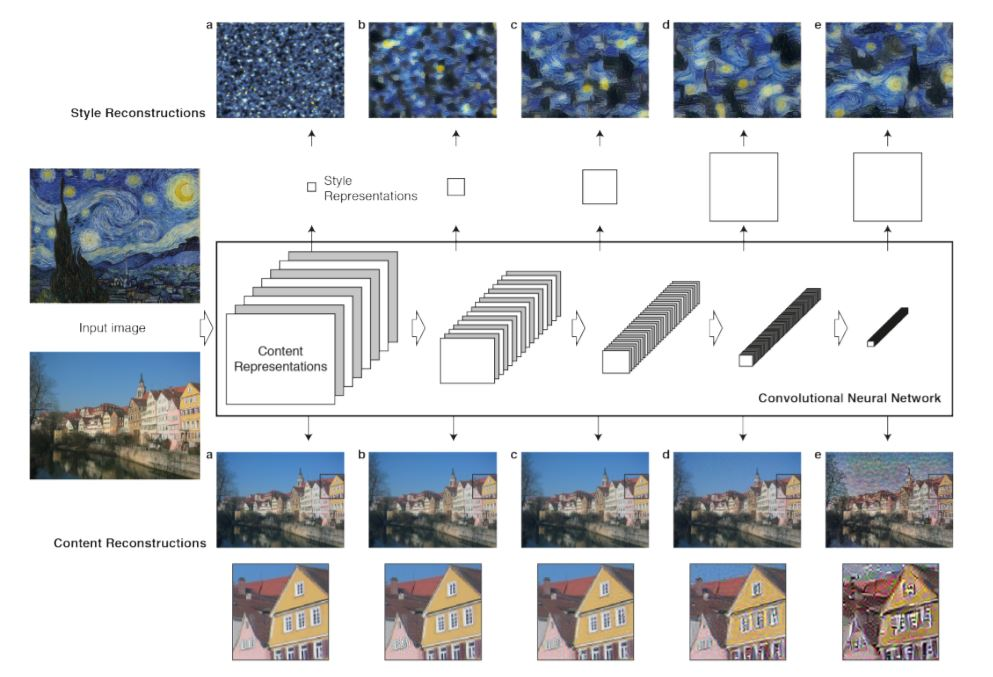
- Higher layers in the network capture the high-level content in terms of objects and their arrangement in the input image. We represent these feature responses as content representation. $$\mathcal L_{content}(\vec p,\vec x,l) = \frac12\sum_{i,j}{(F^l_{ij} - P^l_{ij})^2}$$
- For style we need to capture correlations(given by Gram matrix $G^l \in \mathcal R^{N_l \times N_l}$ where $G^l_{ij} = \sum_kF^l_{ik}F^l_{jk}$) between different filter responses. This representation captures the texture information of the input, but not the global arrangement. This multi-scale representation is called *style representation*. $$E_l = \frac1{4N^2_lM^2_l}\sum_{ij}(G^l_{ij}-A^l_{ij})^2$$ $$\mathcal L_{style}(\vec a,\vec x) = \sum_{l=0}^Lw_lE_l$$
- So, we can manipulate both content and style separately.
- The images are synthesised by finding an image that simultaneously matches the content representation of the photograph and the style representation of the respective piece of art. $$\mathcal L_{total}(\vec p,\vec a,\vec x) = \alpha\mathcal L_{content}(\vec p,\vec x) + \beta\mathcal L_{style}(\vec a,\vec x)$$ 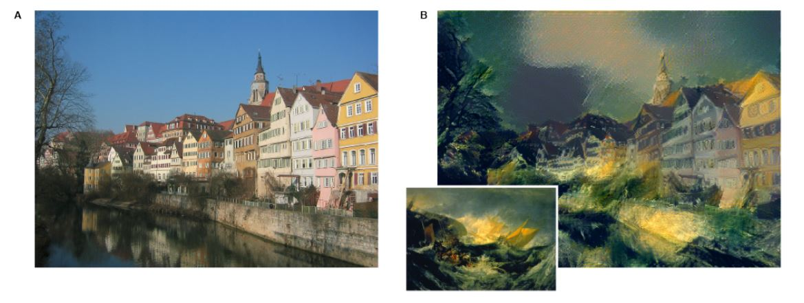 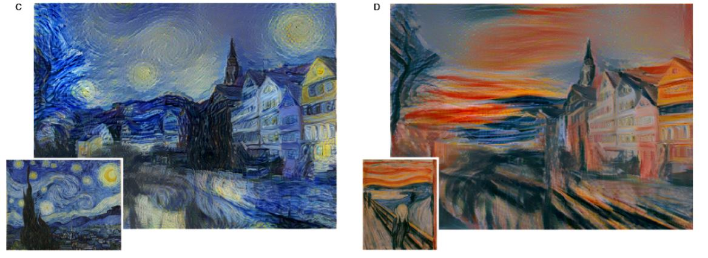 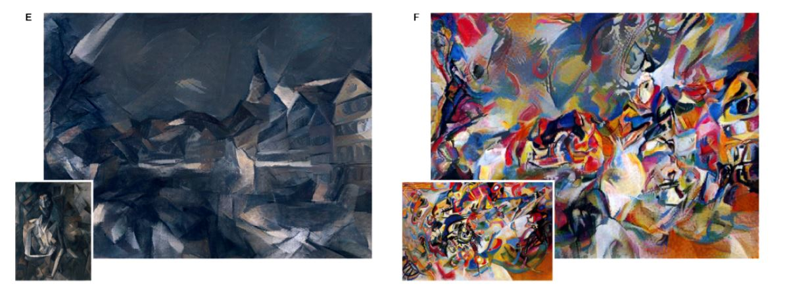
- Gallleries
- Implementations
Improving the Neural Algorithm of Artistic Style
Roman Novak, Yalroslav Nikulin : May 2016
Source
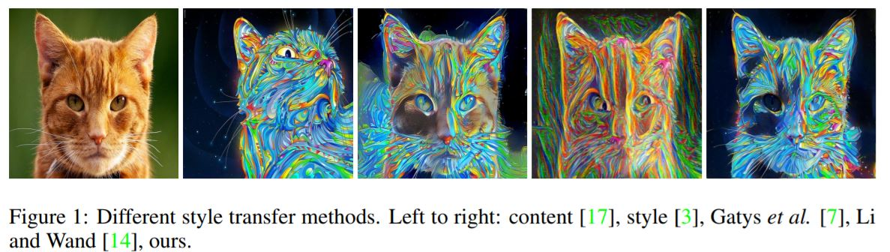
- Objectives addressed in this paper:
- Similar areas of the content image should be repainted in a similar way.
- Different areas should be painted differently.
- Useful Modifications,
- A better per-layer content/style weighting scheme.
- $w_l^s = 2^{D-d(l)},\quad w_l^c=2^{d(l)}$
- This indicates that most important style properties come from bottom layers, while content is mostly represented by activations in the upper layers.
- Using more layers to capture more style properties.
- Used all 16 conv layers of VGG-19 for calculating Gram matrices.
- Using shifted activations when computing Gram matrices to eliminate sparsity and make individual entries more informative and also speed-up style transfer convergence.
- $G^l=(F^l+s)(F^l+s)^T$, (where $s=-1$ for best results).
- Targeting correlations of features belonging to different layers to capture more feature interactions.
- $G^{lk}=F^l[up(F^k)]^T$, if $X_k \leq X_l$
- This blows up the number of definitions of style($G$) to $2^{16^2}$ for 16 layers of VGG-19.
- However, experiments also show that tieing in distant layers gives poor results.
- Correlation Chain
- Instead of considering all layer combinations, use only a “chained” representation, ${G^{l,l-1}|l=2…16}.$
- So, only correlations with immediate neighbors are considered.
- Blurred Correlations
- While calculating correlations, the smaller feature layer is upsampled, but even after having the same dimensions, the feature maps may still correspond to features of different scales.
- To overcome this we use blurring.
- $G^{lk}=F^l[blur^{l-k}\circ up(F^k)]^T$
- This gives positive results, but it does complicate the objective function and results in slow and unreliable convergence.
- A better per-layer content/style weighting scheme.
- Some Modifications that did not work out in the end,
- Gradient Masking
- Amplifying Activations
- Adjacent Activations Correlations
- Content-aware Gram Matrices
- Gram Cubes
- Experiments
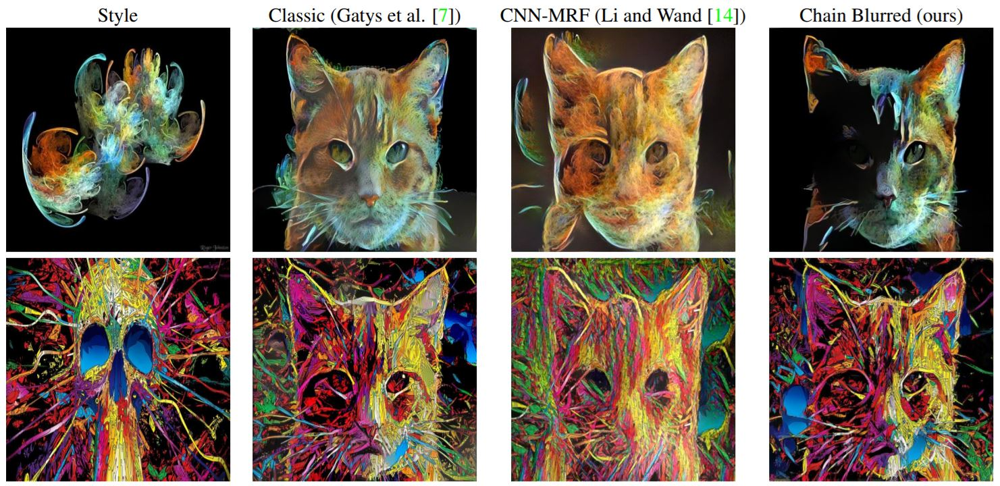
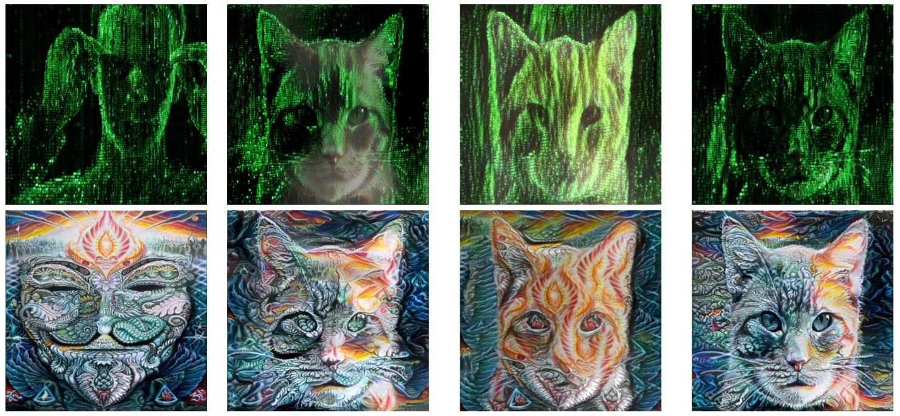
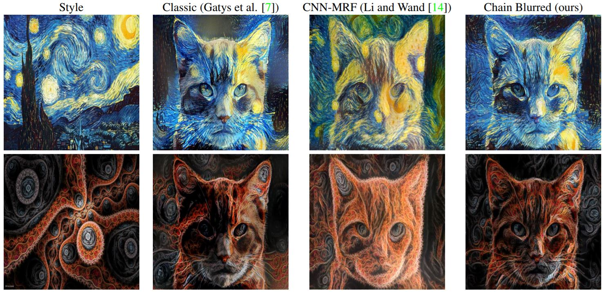
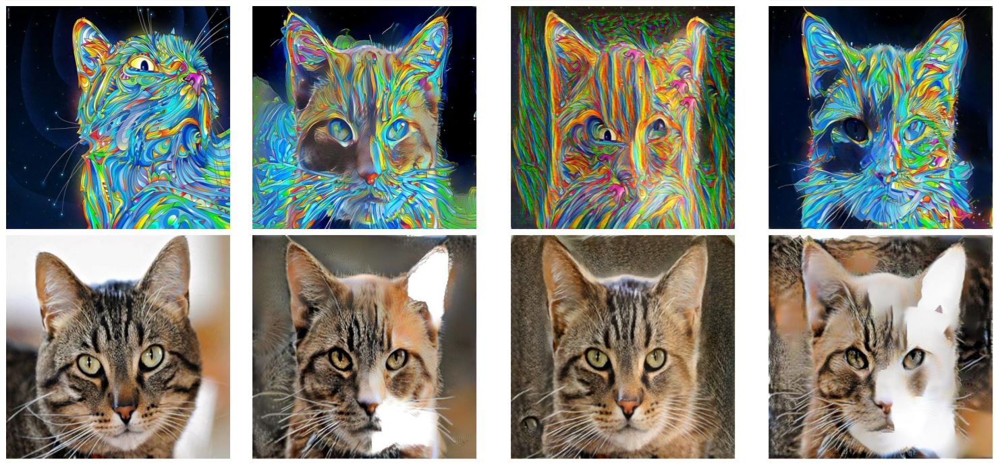
Preserving Color in Neural Artistic Style Transfer
Leon A. Gatys, Matthias Bethge, Aaron Hertzmann, Eli Shechtman : Jun 2016
Source
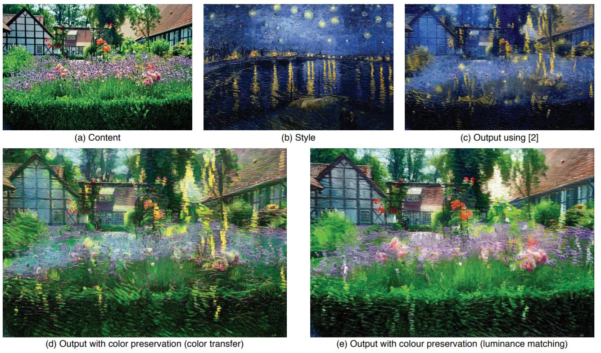
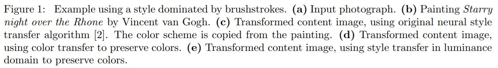
- The original style transfer method also copies the colors of the style image, which might be undesirable in many cases.
- Approach #1: Color histogram matching
- Transform style image $(S)$ to match the colors of content image $(C)$. This produces a new style $(S')$. The algorithm remains unchanged otherwise.
- We have several different options for the initial color transfer.
- Linear method,
- $\mathbf x_{S'}\leftarrow \mathbf Ax_S+\mathbf b$
- $\mathbf b=\mu_C- \mathbf A\mu_S$, where $\mu_C$ and$\mu_S$ are mean colors.
- $\mathbf A\Sigma_S \mathbf A^T=\Sigma_C$, where $\Sigma_C$ and $\Sigma_C$ are pixel covariances.
- $\mathbf A$ can be computed using Cholesky decomposition, or by using Image Analogies. 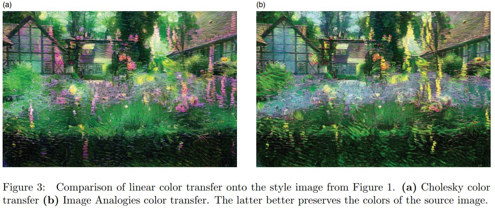
- Color transfer before style transfer generally gives better results.
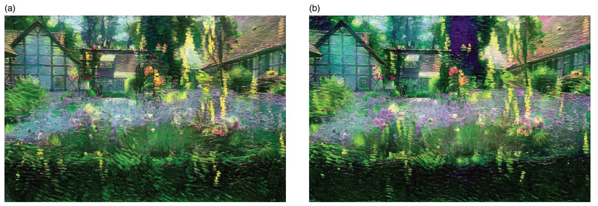
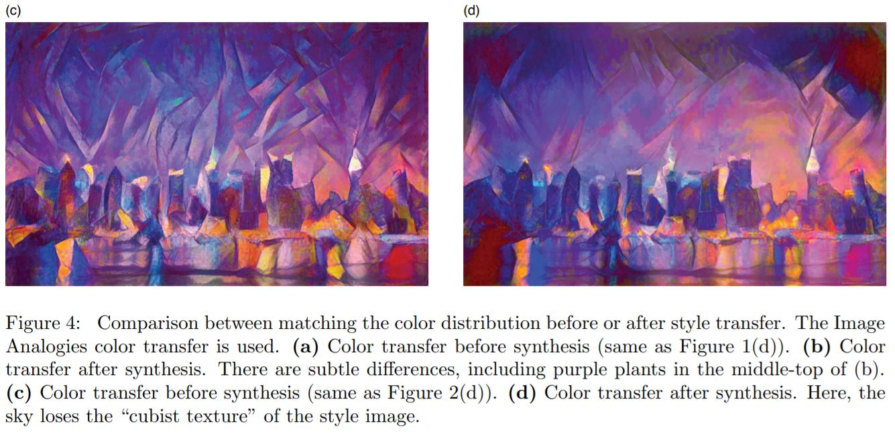 - Approach #2: Luminance-only transfer
- This approach is motivated by the observation that visual perception is far more sensitive to change in luminance than in color.
- $L_S$ and $L_C$ are luminance channels extracted from the style and content images.
- Use a YIQ color space, the color information represented by I and Q channels is combined with $L_T$ to produce the final output image.
- $L_{S'}=\frac {\sigma_C}{\sigma_S}(L_S - \mu_S) + \mu_C$
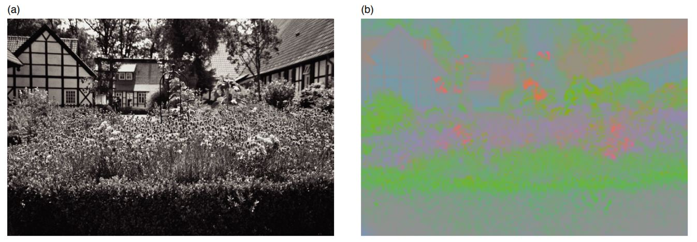
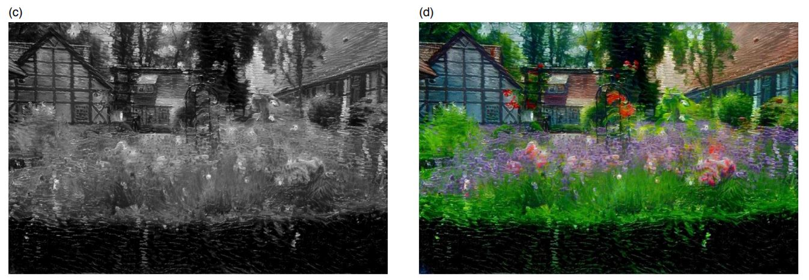
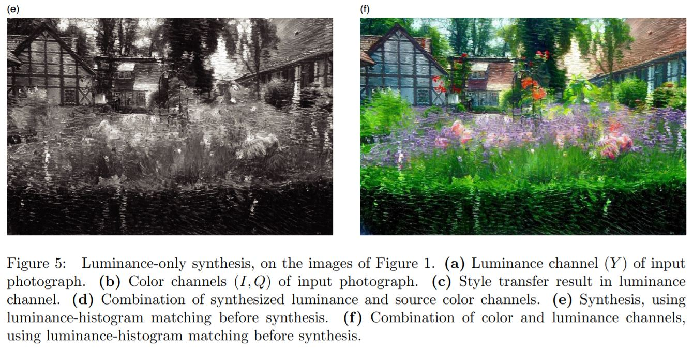 - Comparison
- Linear color transfer onto the style image, before style transfer.
- Limited by how well the color transfer from content to style works.
- Style transfer only in the luminance channel.
- Preserves the colors of content image perfectly.
- However, dependencies between the luminance and the color channels are lost in the output image.
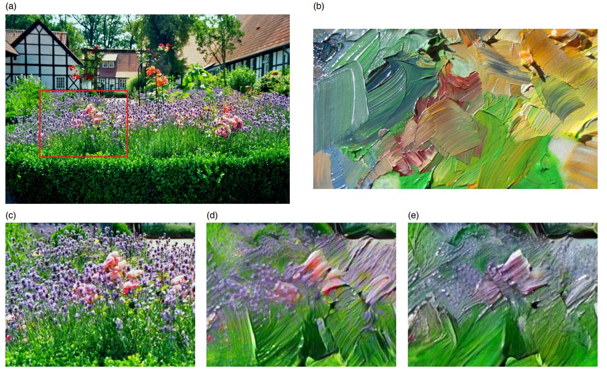
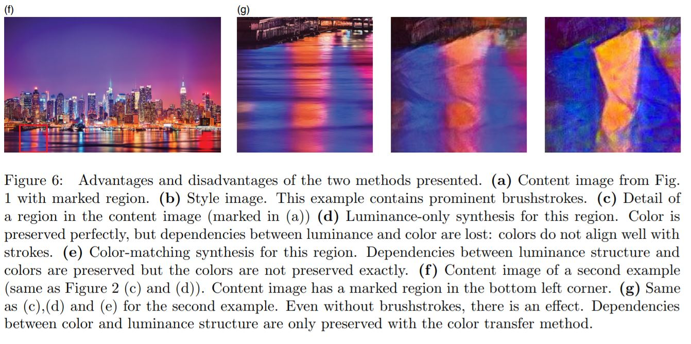